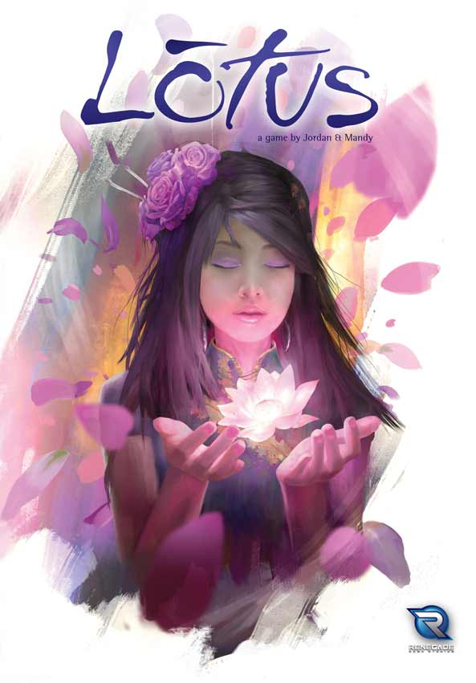
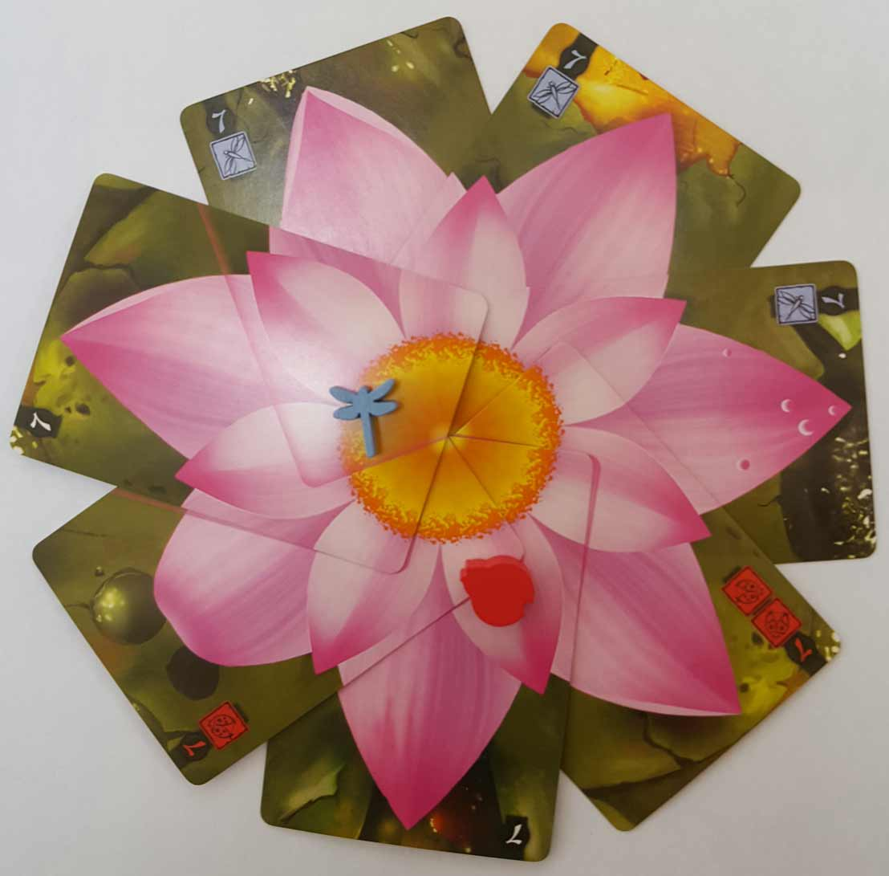
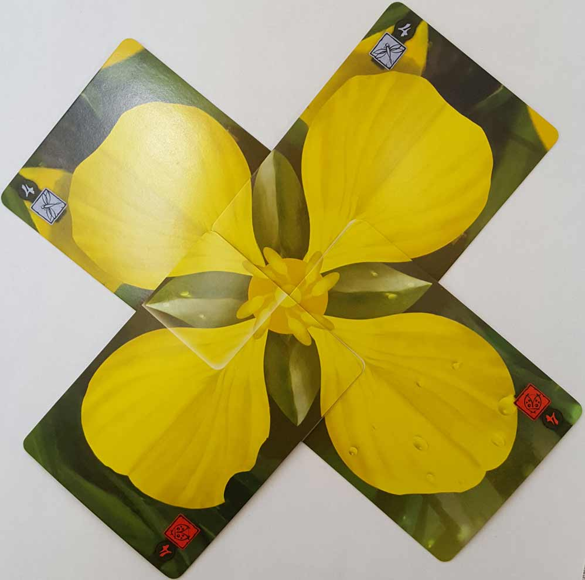
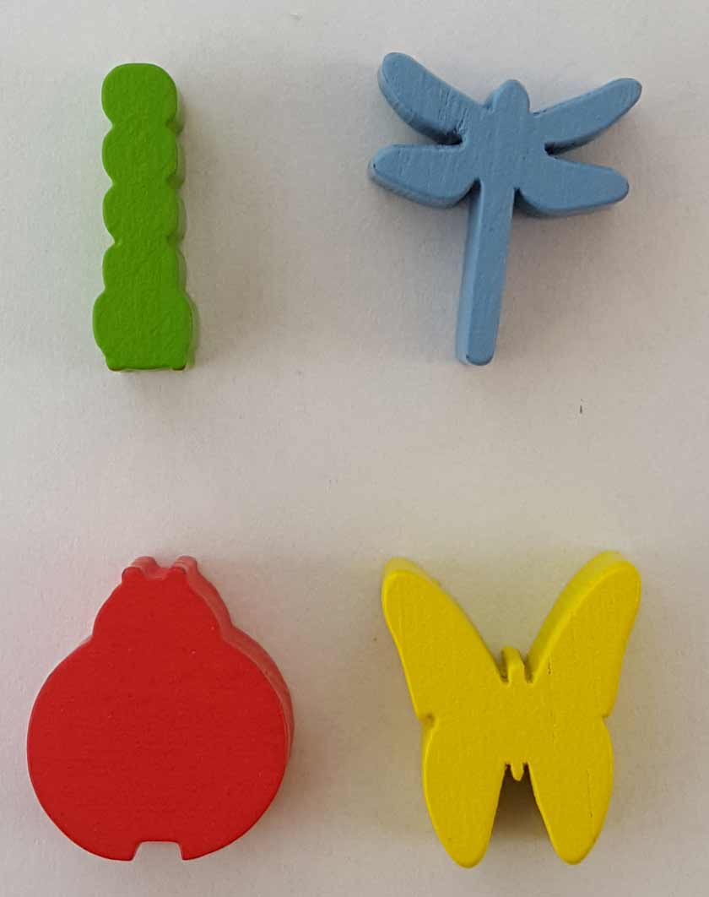

In this Lotus review, D and Will break down the flower-themed card game from Renegade Game Studios. Designed by Jordan and Mandy Goddard, Lotus has its players nurturing a garden full of five different kinds of flowers. As players grow and complete flowers, they will collect points as well as Special Powers that allow them to make a push for victory. In the end, one player will have the most points and win, while the others will wallow in their gardening failures. For more, continue reading below!

D reviews Lotus
 (Author’s
note: this review is meant to accompany our gameplay video and will not
go in-depth on the game’s rules. If you’re interested in learning how
the game is played, please watch the video. It’s not bad.)
(Author’s
note: this review is meant to accompany our gameplay video and will not
go in-depth on the game’s rules. If you’re interested in learning how
the game is played, please watch the video. It’s not bad.)
Lotus feels very much like a game where the designers had a good idea for a single mechanic and then built the rest of the game around that mechanic. This isn’t an inherently bad thing – in fact I’m sure this is very common in the board game industry – but even from the very first time I played it, I felt like Lotus was a game that was sort of rushed through to production because the big hook was solid enough to lure in buyers. I don’t want to sound overly harsh, but much of the game feels a little half-assed, like the first idea for each rule stuck until the end with few or no adjustments made. And it’s a shame, because that good idea truly is a good one.
The mechanic I’m referring to, of course, is the way that the flowers are grown. Specifically, how each card provides a new petal and when the last petal is placed, the arrangement of the cards actually looks like a real flower. It’s clever, beautiful, and something I’ve never seen in a game before – I like it. It had me excited to play the game just to see how it worked out, and I’m happy to say that it works as intended. Unfortunately, there just isn’t really anything else to get excited about. And, frankly, the pleasure of completing the flowers is fleeting. It doesn’t take long until everyone’s preference is to just hurry things along. When you’re playing three cards to finish a five-petal card for the second or third time, there really isn’t much motivation to take the time to assemble them all neatly for a couple seconds before immediately gathering them up and adding them to your pile. It’s easier to just throw ‘em down and take what was already played.
My opinion on Lotus would be higher if the rest of the game was merely functional but unremarkable. Instead, there are some real head-scratchers that made it through to the finished project. For starters, it suffers from an obvious double whammy in that luck is prevalent and a runaway leader problem is almost guaranteed. For controlling completed flowers, you gain permanent special abilities, which provide legitimate advantages. This means the first person to control a flower – in most cases also the person completing the flower – immediately becomes more powerful than their opponents. It’s the rich getting richer, and depending on the cards, it’s not at all difficult for said player to run away with the game. The way that both control and completion of flowers can split who gets rewarded is a pretty good idea and can mitigate this issue to some degree, but not nearly enough to excuse it.
The other, most glaring issue comes at the end of the game. We mentioned our issues with it during the recording of our video, but I need to reiterate them here. Like many games, in Lotus there’s a first player and then play proceeds clockwise for the rest of the game. The order in which the players take their turns is never altered. Yet for some reason, the rules dictate that once a player draws the last petal card from their deck, all players get one final turn. My guess for the logic behind this is that they don’t want to punish the person who draws their last card by not making them able to use it. My suggestion would be to just have the drawing back up to four cards be the first step of every turn, instead of the last. Because as things currently stand, unless the last player to go in the first round is also the player who triggers the final round, that player (and perhaps others) will have one fewer round to play cards. This is an obvious disadvantage and blatantly poor design. It’s not even difficult to fix, so I honestly would recommend house ruling this if you find yourself playing Lotus. And one final gripe: the rulebook always refers to the players by using masculine pronouns instead of being gender-neutral, which I always hate. I’m not usually some moral crusader, but plenty of women play board games and it’s such an easy thing to do to not make anyone feel excluded.
Look, not every game has to be perfect. Not every game is trying to be perfect, and that’s completely fine. But Lotus, perhaps more than any other game we’ve played so far, feels like the product of a bunch of people trying to make a quick buck. I get it; at the end of the day, making and selling board games is a business first and foremost, so if you have a product that people will probably be willing to buy, you don’t want to waste any time in getting it to market. But that doesn’t excuse sloppy game design, and I’m not going to give it any leniency in my estimation of it. Lotus is a pretty good idea surrounded by a pretty poor game, and I cannot recommend it.
D’s Rating: Two Stars out of Five
Will reviews Lotus
 Lotus is
a hard game to dislike – it’s lighthearted, breezy, and gorgeous. For
Pete’s sake, the game has you nurturing and growing flowers, one card at
a time. I mean, how could you get angry at a game with a theme like
that? Well as it turns out, it is possible – with faulty mechanics – to
spoil even the merriest of games. Lotus does just that. I
suppose you could summarize its issues with the style-over-substance
critique, which is definitely valid here. On the surface, Lotus looks satisfying and beautiful, but underneath all that, it’s really flawed and underdeveloped.
Lotus is
a hard game to dislike – it’s lighthearted, breezy, and gorgeous. For
Pete’s sake, the game has you nurturing and growing flowers, one card at
a time. I mean, how could you get angry at a game with a theme like
that? Well as it turns out, it is possible – with faulty mechanics – to
spoil even the merriest of games. Lotus does just that. I
suppose you could summarize its issues with the style-over-substance
critique, which is definitely valid here. On the surface, Lotus looks satisfying and beautiful, but underneath all that, it’s really flawed and underdeveloped.
Component-wise, there’s not much to complain about with this game. The cards are constructed from basic card stock that’s neither high nor low quality. There are also a handful of cardboard tokens and wooden figures that are similarly passable. While the build quality is just adequate, the art design is pretty great. The flower cards are all vibrant and eye-catching, though I do wish there weren’t two flowers with basically the exact same shade of pink. Also, the way that the cards lay on top of each other to form completed flowers is really clever and intuitive, so I definitely want to praise the designers (Jordan & Mandy Goddard) for nailing that aspect. Before you ever get to the gameplay, you’re going to love what you get within Lotus’ box. Again, on the surface, this is a pretty captivating card game.
Alas, the gameplay (or substance) leaves something to be desired, especially deeper into a session. At first glance, Lotus seems to play well, given its rather understandable rule set and short playtime. In fact, I would go as far as to say that the core gameplay here is really good, in theory. I say “in theory” because a lot of the rules lead to issues with the gameplay later on in any given session. Let’s start with the good. Every round, each player gets to take two separate actions. You can choose from playing two cards from your hand, exchanging two cards with ones from your deck, or placing down a “Guardian”. These Guardians are little wooden insects that will give you one (or potentially two) extra Control over a flower. These actions all have their uses and usually function well.
Speaking of “Control”, there are two separate ways for players to earn victory points in Lotus. In the top corner of the flower cards, there are numbers that correspond to the amount of cards required to complete a flower of that type. That number is also the amount of points you’ll earn if you’re the player that completes that flower. For instance, if you play the fourth card on a flower showing a “4”, you’ve completed said flower and therefore collect the cards and the points that go with them, in this case four. However, this doesn’t necessarily mean that you “control” that flower. Each card from the colored player decks also features a symbol (or two) on it beneath the number. Once a flower is completed, you count the number of symbols and guardians on it, and the player with the most of their type has control. That player can then choose to take a token worth five victory points or one that provides them with a “Special Power”. When it comes to scoring points, I really appreciate that the designers crafted a system in which multiple strategies can pay off. You can either try to complete a flower and collect its points, or you can go after control, taking the points or upgrades that come with it. This system is undoubtedly a good thing that adds nuance to what are otherwise pretty simple mechanics.
Sadly, basically everything else about the gameplay is flawed. First of all, you have to take luck-of-the-draw into consideration almost constantly. Some players will have the cards they need while others won’t. This is tolerable though, as randomness is a given in almost every card game. The problem is that Lotus too often exaggerates the negatives that come with luck. Take for instance the Special Powers, which are helpful in theory but often more troublesome than not. All three of them are designed to give players an edge, but unfortunately, they almost always contribute to a runaway leader problem. In each one of our numerous playthroughs, one player has gotten a two Special Power lead on the other players. Taking advantage of these upgrades, the runaway leader could play more cards at once or assert more control, which allows them to be exponentially more successful. It’s almost as if the Special Powers were put in the game as a way to add depth and intrigue, which is understandable. I just wish there was more thought put into them and into the way they’re earned.
Not only that, we’ve also noticed that the player who goes first and starts the game almost always wins. There’s definitely an advantage to starting a flower or two, waiting for your opponents to add to them, and then completing those flowers for points and most likely, Special Powers. I don’t know if there’s actually a fix for this issue – it might be inherent to the gameplay. This all leads to the endgame, which is initiated when someone draws the last card from his or her deck. At this point, players get one more turn, including the player who exhausted their deck. This all sounds well and good, but it doesn’t make much sense in practice. For example, let’s say that in a 3-player game, the second person to go draws their last card after their turn is over, starting the endgame round. In this scenario, the first and second players would each get one more turn overall than the third player. How is that fair, especially in a game where every turn is a chance to earn victory points? To me, the solution is easy – once the endgame is initiated, you finish out the round like normal. As it is, the endgame rule for Lotus is underdeveloped and has negatively affected the results of most of our sessions. This is completely unacceptable in my book.
As I said before, Lotus is a hard game to dislike. It does some things really well, like its artwork, theme, and occasionally satisfying gameplay. But all of the positives are undone by the negatives, and in this case, the negatives are so glaring that it makes me dislike it. Some of the most important things to focus on when designing a game, like balance and endgame rules, were too underdeveloped for Lotus to succeed. Maybe some more tinkering and playtesting would’ve fixed that, but that’s not really for me to say. What I can say is that I see so much potential within this little game to be good, but as it is, it’s exceedingly mediocre – bordering on bad.
I give Lotus a: C-
Leave a Reply
You must be logged in to post a comment.